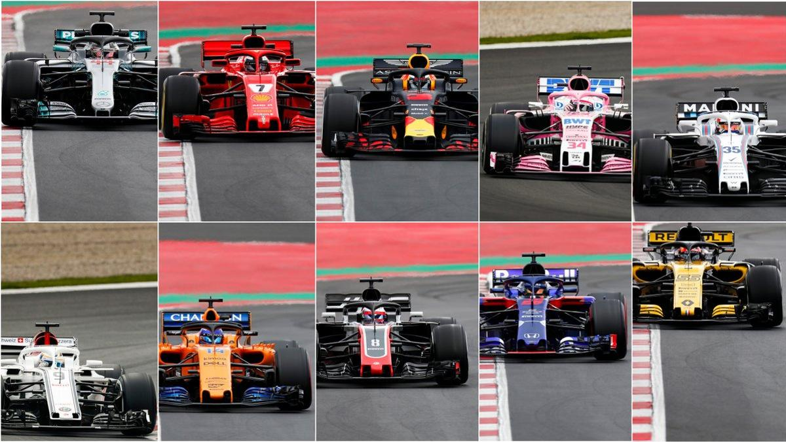

Comienza una nueva temporada con muchas novedades

La temporada 2018 de Fórmula 1 será la 69.ª temporada del Campeonato Mundial de Fórmula 1 de la historia. Estará organizada por la Federación Internacional de Automovilismo (FIA).
Alegrías y desilusiones son las palabras que siempre suele dejar la pretemporada. Alegrías para algunos que han acertado en los diseños y ven los datos que buscaban en los simuladores, bancos de prueba, CFD y túneles de viento, representados en pista. Y desiluciones para quién se ha pasado de listo con ciertos diseños o no hay un buen feedback entre los datos de fábrica y los reales, o simplemente no ha cumplido sus espectativas. Igual para los aficionados, que querían ver a su piloto/equipo favorito en lo alto y tocará verlo más abajo…